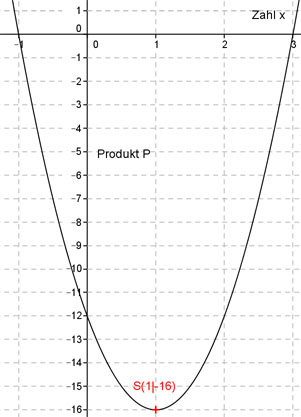

Aufgabe 110 Für welche Zahl ist das Produkt aus ihrem um 4 vergrößerten 4fachen und der um 3 kleineren Zahl am kleinsten? Die Zahl sei x. Das 4fache ist 4x Das um 4 vergrößerte 4fache ist (4x + 4) Die um 3 kleinere Zahl ist (x - 3) P(x) sei das Produkt der beiden Zahlen, abhängig von x P(x) = (4x + 4)(x - 3) P(x) = 4x2 - 8x - 12 Dies ist die Funktionsgleichung einer nach oben geöffneten, gestreckten Parabel, deren tiefster Punkt der Scheitelpunkt ist. P(x) = 4x2 - 8x - 12 |:4 P(x) ---- = x2 - 2x - 3 4 Quadratische Ergänzung: P(x) ---- = x2 - 2x + 1 - 1 - 3 4 mit x2 - 2x + 1 = (x - 1)2 P(x) ---- = (x - 1)2 - 4 |*4 4 P(x) = 4(x - 1)2 - 16 Scheitelpunkt abgelesen: S(1|-16) Die Scheitelpunktkoordinaten bedeuten: Die Zahl ist x = 1 und das kleinste Produkt P(1) = (4 * 1 + 4)(1 - 3) = 8 * (-2) = -16 